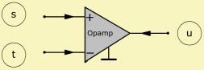

OpAmp
| Home | LE-Part | Electric |
 |
The OpAmp-element creates an operational-amplifier in the electrical domain of the network. An OpAmp amplifies the sum of the voltage of the non-inverting (+) and inverting (-) inputs.
Parameters
| Caption | String | Name of component |
| Formula | String | Formula of parameters |
| vo | Amplification (open loop) | |
| Rg | Ω | Resistance output stage |
| ft | Hz | Transit frequency |
| Rdiff | Ω | Resistance differential |
| Rin | Ω | Resistance input |
The OpAmp model takes into account some technical parameters such as input-resistances, frequency range limitation and generator-resistance.
 |
Resistance Output Stage Rg
The calculation requires the presence of the generator-resistance Rg of the output-stage. Rg usually has a very low value (1 ... 500Ω). If the data-sheet does not quote Rg directly, you can usually obtain it from the diagrams or you measure Rg: While retaining a fixed input voltage, first measure the output-voltage U0 without any load attached. Then connect a resistance of, say, RL = 1k ... 2kΩ. Measure the new voltage UL. You can then obtain the generator resistance from the two voltages according to the formula: Rg = RL·(U0/UL - 1)
If you do not specify Rg the application defaults to the value of Rg = 1Ω.
Open-Loop-Gain v0 and Transition Frequency ft
The open-loop gain vo is frequency dependent and has a low-pass character F(s):
F(jω) = 1/(1 + jω/ωt·vo)
The -3dB cut-off frequency is usually at approximately 10Hz. Below the OpAmps’ amplification is equal to vo. The amplitude-attenuation is at first 6dB/octave and at very high frequencies 12dB/octave. The OpAmp operates reliably in the frequency-range at which the total gain is greater than one and the phase rotation is less than 180°. This frequency-range is called Unity-Gain-Bandwidth or transition-frequency ft. If the transition-frequency ft is specified, the model used here takes into account a singe pole of the low-pass filter inherent in the OpAmp.
The default value for vo = 106. The specification of the transition-frequency ft is optional.
Input Resistances Rdiff and Rin
There are two types of input-resistances. The first is between the inverting and non-inverting inputs (Rdiff). The second is the resistance of each input to ground (Rin). Rin is usually much larger than Rdiff. Data-sheets usually only give the input resistance Re which is measurable if one of the inputs is connected to ground:
1/Re = 1/Rdiff + 1/Rin
At high frequencies, the input-resistances usually become complex. You can simulate this by introducing appropriate capacitances. The specification of the input-resistances is optional.
Slew-Rate
The slew-rate is the maximum rate of rise of the output-voltage. Since the internal capacities of the OpAmp can only be recharged with limited currents, the output-voltage cannot change at an arbitrarily fast rate. The OpAmp responds to a discontinuous input-voltage of any magnitude with a ramp-shaped output-voltage, whose gradient is the slew-rate SR. The same effect limits the linear gain of sinusoidal signals with maximum amplitude Umax towards high frequencies.
The frequency fp at which a sinusoidal signal with Vmax can just be transmitted without distortion is called the large-signal bandwidth or power-bandwidth:
fp = SR/(2π·Vmax)
If the frequency f exceeds the power-bandwidth fp, the amplitude V has to be reduced according to the relationship so that the slew-rate is not exceeded. Note, in the simulation, you can easily observe the output-voltage of the OpAmp. In filter-circuits, in particular, considerable increase in voltage occur in the vicinity of the pole-frequencies of the filter-blocks. The voltage has to be smaller than Vmax.
Formula
The name of the parameters are equal to the formula-identifiers:
| Parameter | |
| vo | Amplification (open loop) |
| Rg | Resistance output stage |
| ft | Transit frequency |
| Rdiff | Resistance differential |
| Rin | Resistance input |